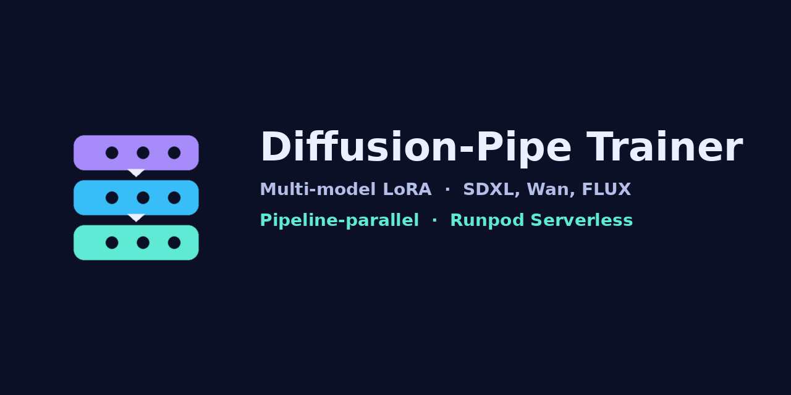

Diffusion-Pipe LoRA Trainer
Train SDXL, Wan 2.1 / 2.2 and FLUX.1-dev LoRAs with tdrussell/diffusion-pipe and Deepspeed pipeline parallelism on Runpod Serverless. Send a zip of images or videos and a trigger word; get a .safetensors LoRA on your network volume, Hugging Face repo, or S3 bucket. Default model: SDXL (public weights, ~6.5 GiB, fits 24 GB).
Deploy on Runpod HubGitHub repositoryREADMEllms.txtopenapi.yamlAGENTS.mdReleases
Quick start
curl -X POST https://api.runpod.ai/v2/$ENDPOINT_ID/run \
-H "Authorization: Bearer $RUNPOD_API_KEY" -H "Content-Type: application/json" \
-d '{"input": {"dry_run": true, "base_model": "sdxl",
"dataset_url": "https://raw.githubusercontent.com/prilojject/runpod-diffusion-pipe-trainer/main/examples/datasets/tiny_sdxl.zip",
"trigger_word": "zxowl", "class_word": "figurine"}}'
- Always use async
/runfor training and raisepolicy.executionTimeout(the 600 s default is too short; a cold start may download ~6.5 GiB for SDXL). - Put
HF_TOKENin a Runpod secret for FLUX.1-dev or Hugging Face uploads. Tokens in the job input are rejected. SDXL and official Wan-AI catalogs are public. - Hub test: SDXL, 20 steps, 512 px, no samples, RTX 4090. 14B / Flux / multi-GPU are not part of the official test.
- This worker is GPL-3.0 (same as upstream diffusion-pipe). It is not a clone of the kohya image-LoRA or musubi video-LoRA workers.
Full documentation: README on GitHub. The Hub listing link works after Runpod's review.